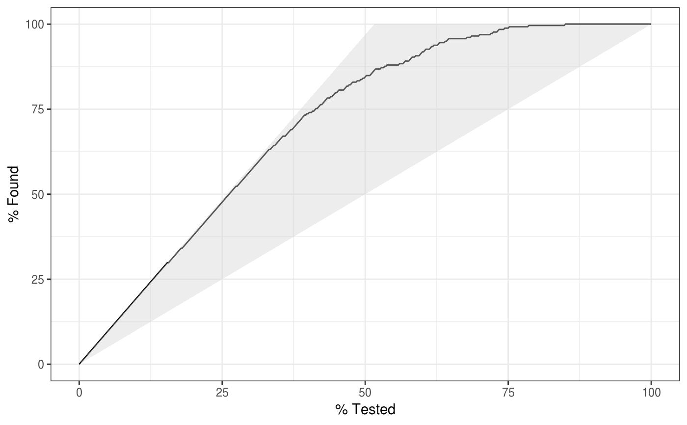

gain_capture() is a measure of performance similar to an AUC calculation,
but applied to a gain curve.
gain_capture(data, ...) # S3 method for data.frame gain_capture( data, truth, ..., estimator = NULL, na_rm = TRUE, event_level = yardstick_event_level() ) gain_capture_vec( truth, estimate, estimator = NULL, na_rm = TRUE, event_level = yardstick_event_level(), ... )
| data | A |
|---|---|
| ... | A set of unquoted column names or one or more
|
| truth | The column identifier for the true class results
(that is a |
| estimator | One of |
| na_rm | A |
| event_level | A single string. Either |
| estimate | If |
A tibble with columns .metric, .estimator,
and .estimate and 1 row of values.
For grouped data frames, the number of rows returned will be the same as the number of groups.
For gain_capture_vec(), a single numeric value (or NA).
gain_capture() calculates the area under the gain curve, but above
the baseline, and then divides that by the area under a perfect gain curve,
but above the baseline. It is meant to represent the amount of potential
gain "captured" by the model.
The gain_capture() metric is identical to the accuracy ratio (AR), which
is also sometimes called the gini coefficient. These two are generally
calculated on a cumulative accuracy profile curve, but this is the same as
a gain curve. See the Engelmann reference for more information.
There is no common convention on which factor level should
automatically be considered the "event" or "positive" result
when computing binary classification metrics. In yardstick, the default
is to use the first level. To alter this, change the argument
event_level to "second" to consider the last level of the factor the
level of interest. For multiclass extensions involving one-vs-all
comparisons (such as macro averaging), this option is ignored and
the "one" level is always the relevant result.
Macro and macro-weighted averaging is available for this metric.
The default is to select macro averaging if a truth factor with more
than 2 levels is provided. Otherwise, a standard binary calculation is done.
See vignette("multiclass", "yardstick") for more information.
Engelmann, Bernd & Hayden, Evelyn & Tasche, Dirk (2003). "Measuring the Discriminative Power of Rating Systems," Discussion Paper Series 2: Banking and Financial Studies 2003,01, Deutsche Bundesbank.
gain_curve() to compute the full gain curve.
Other class probability metrics:
average_precision(),
classification_cost(),
mn_log_loss(),
pr_auc(),
roc_auc(),
roc_aunp(),
roc_aunu()
Max Kuhn
# --------------------------------------------------------------------------- # Two class example # `truth` is a 2 level factor. The first level is `"Class1"`, which is the # "event of interest" by default in yardstick. See the Relevant Level # section above. data(two_class_example) # Binary metrics using class probabilities take a factor `truth` column, # and a single class probability column containing the probabilities of # the event of interest. Here, since `"Class1"` is the first level of # `"truth"`, it is the event of interest and we pass in probabilities for it. gain_capture(two_class_example, truth, Class1)#> # A tibble: 1 × 3 #> .metric .estimator .estimate #> <chr> <chr> <dbl> #> 1 gain_capture binary 0.879# --------------------------------------------------------------------------- # Multiclass example # `obs` is a 4 level factor. The first level is `"VF"`, which is the # "event of interest" by default in yardstick. See the Relevant Level # section above. data(hpc_cv) # You can use the col1:colN tidyselect syntax library(dplyr) hpc_cv %>% filter(Resample == "Fold01") %>% gain_capture(obs, VF:L)#> # A tibble: 1 × 3 #> .metric .estimator .estimate #> <chr> <chr> <dbl> #> 1 gain_capture macro 0.743# Change the first level of `obs` from `"VF"` to `"M"` to alter the # event of interest. The class probability columns should be supplied # in the same order as the levels. hpc_cv %>% filter(Resample == "Fold01") %>% mutate(obs = relevel(obs, "M")) %>% gain_capture(obs, M, VF:L)#> # A tibble: 1 × 3 #> .metric .estimator .estimate #> <chr> <chr> <dbl> #> 1 gain_capture macro 0.743#> # A tibble: 10 × 4 #> Resample .metric .estimator .estimate #> <chr> <chr> <chr> <dbl> #> 1 Fold01 gain_capture macro 0.743 #> 2 Fold02 gain_capture macro 0.727 #> 3 Fold03 gain_capture macro 0.796 #> 4 Fold04 gain_capture macro 0.748 #> 5 Fold05 gain_capture macro 0.730 #> 6 Fold06 gain_capture macro 0.754 #> 7 Fold07 gain_capture macro 0.730 #> 8 Fold08 gain_capture macro 0.747 #> 9 Fold09 gain_capture macro 0.710 #> 10 Fold10 gain_capture macro 0.731# Weighted macro averaging hpc_cv %>% group_by(Resample) %>% gain_capture(obs, VF:L, estimator = "macro_weighted")#> # A tibble: 10 × 4 #> Resample .metric .estimator .estimate #> <chr> <chr> <chr> <dbl> #> 1 Fold01 gain_capture macro_weighted 0.759 #> 2 Fold02 gain_capture macro_weighted 0.745 #> 3 Fold03 gain_capture macro_weighted 0.811 #> 4 Fold04 gain_capture macro_weighted 0.734 #> 5 Fold05 gain_capture macro_weighted 0.733 #> 6 Fold06 gain_capture macro_weighted 0.730 #> 7 Fold07 gain_capture macro_weighted 0.737 #> 8 Fold08 gain_capture macro_weighted 0.730 #> 9 Fold09 gain_capture macro_weighted 0.681 #> 10 Fold10 gain_capture macro_weighted 0.737# Vector version # Supply a matrix of class probabilities fold1 <- hpc_cv %>% filter(Resample == "Fold01") gain_capture_vec( truth = fold1$obs, matrix( c(fold1$VF, fold1$F, fold1$M, fold1$L), ncol = 4 ) )#> [1] 0.7428922# --------------------------------------------------------------------------- # Visualize gain_capture() # Visually, this represents the area under the black curve, but above the # 45 degree line, divided by the area of the shaded triangle. library(ggplot2) autoplot(gain_curve(two_class_example, truth, Class1))